<!DOCTYPE html>
<html lang="ja">

<head>
  <meta charset="UTF-8">
  <meta name="viewport" content="width=device-width, initial-scale=1.0">
  <title>China Tech Vision 2049: 中国 Vision 2049: AI × BCI国家戦略 - 2025/12/08</title>
  <style>
    
    :root {
      --primary: #D32F2F; /* China Red */
      --accent: #FFD700; /* Gold */
      --accent2: #FF5252;
      --bg-dark: #1a0505;
      --bg-light: #fff5f5;
      --border: #ffcdd2;
      --text: #2c0b0e;
      --text-light: #5c1e23;
    }
    header {
      background: linear-gradient(135deg, #8E0000 0%, #1a0505 100%);
    

    * {
      margin: 0;
      padding: 0;
      box-sizing: border-box;
    }

    body {
      font-family: 'Google Sans', 'Hiragino Sans', 'Hiragino Kaku Gothic ProN', 'Yu Gothic', 'Meiryo', system-ui, -apple-system, sans-serif;
      background: linear-gradient(135deg, var(--bg-light) 0%, white 100%);
      color: var(--text);
      line-height: 1.6;
      padding: 20px;
    }

    .container {
      max-width: 1400px;
      margin: 0 auto;
      background: white;
      border-radius: 24px;
      box-shadow: 0 20px 60px rgba(0, 0, 0, 0.15);
      overflow: hidden;
    }

    /* ヘッダー */
    header {
      background: linear-gradient(135deg, #8E0000 0%, #1a0505 100%);
      color: white;
      padding: 48px;
      text-align: center;
      position: relative;
      overflow: hidden;
    }

    header::before {
      content: '';
      position: absolute;
      top: -50%;
      left: -50%;
      width: 200%;
      height: 200%;
      background: repeating-linear-gradient(45deg,
          transparent,
          transparent 10px,
          rgba(255, 255, 255, 0.05) 10px,
          rgba(255, 255, 255, 0.05) 20px);
      animation: slide 30s linear infinite;
    }

    @keyframes slide {
      0% {
        transform: translate(0, 0);
      }

      100% {
        transform: translate(50px, 50px);
      }
    }

    .breaking-badge {
      display: inline-block;
      background: rgba(255, 140, 0, 0.2);
      border: 1px solid var(--primary);
      color: var(--primary);
      padding: 8px 20px;
      border-radius: 20px;
      margin-bottom: 16px;
      font-weight: 700;
      font-size: 1.1rem;
      backdrop-filter: blur(10px);
      position: relative;
      z-index: 1;
    }

    h1 {
      font-size: 2.4rem;
      font-weight: 900;
      margin-bottom: 12px;
      position: relative;
      z-index: 1;
      text-shadow: 2px 2px 8px rgba(0, 0, 0, 0.5);
    }

    .subtitle {
      font-size: 1.3rem;
      opacity: 0.95;
      position: relative;
      z-index: 1;
      font-weight: 500;
      margin-bottom: 8px;
      color: #FFD54F;
    }

    .date {
      font-size: 1rem;
      opacity: 0.7;
      position: relative;
      z-index: 1;
    }

    /* メインコンテンツ */
    main {
      padding: 48px;
    }

    .top-image-container {
      text-align: center;
      margin-bottom: 48px;
      width: 100%;
      overflow: hidden;
    }

    .top-image-container img {
      width: 100%;
      height: auto;
      max-width: 1000px;
      object-fit: contain;
      border-radius: 16px;
      box-shadow: 0 10px 30px rgba(0, 0, 0, 0.2);
      display: block;
      margin: 0 auto;
    }

    .section {
      margin-bottom: 48px;
    }

    .section-header {
      background: linear-gradient(135deg, #8E0000 0%, #1a0505 100%);
      border: 1px solid var(--border);
      border-radius: 16px;
      padding: 32px;
      margin-bottom: 32px;
      box-shadow: 0 4px 6px rgba(0, 0, 0, 0.05);
      transition: transform 0.2s ease, box-shadow 0.2s ease;
    }

    .card:hover {
      transform: translateY(-2px);
      box-shadow: 0 10px 20px rgba(0, 0, 0, 0.1);
    }

    .card.accent {
      border-top: 4px solid var(--primary);
    }
    
    .card h4 {
        color: var(--text);
        font-size: 1.4rem;
        margin-bottom: 16px;
        border-bottom: 1px solid var(--border);
        padding-bottom: 12px;
    }

    h3 {
        font-size: 1.6rem;
        font-weight: 700;
        color: var(--text);
        margin-top: 40px;
        margin-bottom: 20px;
        display: flex;
        align-items: center;
    }
    
    h3::before {
        content: '';
        display: inline-block;
        width: 8px;
        height: 32px;
        background: var(--primary);
        margin-right: 12px;
        border-radius: 4px;
    }

    /* 3-column feature grid */
    .feature-grid {
        display: grid;
        grid-template-columns: repeat(auto-fit, minmax(250px, 1fr));
        gap: 24px;
        margin-top: 24px;
    }

    .feature-item {
        background: var(--bg-light);
        padding: 20px;
        border-radius: 12px;
        text-align: center;
        border: 1px solid var(--border);
    }

    .feature-icon {
        font-size: 3rem;
        margin-bottom: 16px;
        display: block;
    }

    .feature-title {
        font-weight: bold;
        font-size: 1.1rem;
        margin-bottom: 8px;
        color: var(--text);
    }

    .feature-desc {
        font-size: 0.95rem;
        color: var(--text-light);
        text-align: left;
    }

    /* フッター */
    footer {
      background: var(--bg-dark);
      color: white;
      padding: 32px 48px;
      text-align: center;
    }

      /* レスポンシブ対応 */
      @media (max-width: 768px) {
        body {
          padding: 0;
        }

        .container {
          border-radius: 0;
          box-shadow: none;
        }

        header {
      background: linear-gradient(135deg, #8E0000 0%, #1a0505 100%); color: white; padding: 24px; border-radius: 16px; margin-bottom: 32px; box-shadow: 0 8px 20px rgba(0, 0, 0, 0.25);">
        <p style="font-size: 1.3rem; font-weight: 800; margin-bottom: 8px; line-height: 1.5; letter-spacing: 0.05em;">
            中国が描く2049年の未来像「Vision 1」は、欧米のAGI論とは一線を画します。
        </p>
        <p style="font-size: 1.1rem; opacity: 0.95; margin: 0; line-height: 1.6;">
            国家主導のタイムライン、脳–機械インターフェース（BCI）のインフラ化、そして人間拡張（Augmentation）。「社会主義的近代化の完成形」としてのAI戦略の全貌が明らかになりました。
        </p>
    </div>
    
        <h3>独自のシンギュラリティ観</h3>
        
    <div class="highlight-box">
      <p><strong>【従来のAI戦略との決定的な違い】</strong><br>
      Big Tech主導の欧米型モデルに対し、中国は<strong>「国家安全保障」と「社会実装」</strong>を最優先。<br>
      単なる知能の自動化ではなく、BCIを通じてAIを人間の脳に直接接続し、認知能力を物理的に拡張する「トランスヒューマン的アプローチ」を国家規模で推進しています。</p>
    </div>
    
        
    <div class="card accent">
      <h4>Vision 2049 の3つの柱</h4>
      
      <div class="feature-grid">
        <div class="feature-item">
            <span class="feature-icon">🇨🇳</span>
            <div class="feature-title">State Driven</div>
            <div class="feature-desc">
                建国100周年(2049年)に向けた政治的マイルストーン。民間任せではなく、国家が「自主可控」な技術体系を整備。
            </div>
        </div>
        <div class="feature-item">
            <span class="feature-icon">🧠</span>
            <div class="feature-title">BCI Infrastructure</div>
            <div class="feature-desc">
                脳–機械インターフェースを次世代インフラと定義。思考を直接デジタル空間へ送る「シームレスな融合」を目指す。
            </div>
        </div>
        <div class="feature-item">
            <span class="feature-icon">🚀</span>
            <div class="feature-title">Human Augmentation</div>
            <div class="feature-desc">
                AIによる「人間の置き換え」ではなく「能力拡張」。ASI（超知能）を脳の延長として活用する独自のアプローチ。
            </div>
        </div>
      </div>
    </div>
    
        
    <div class="card">
        <h4>実装へのロードマップ</h4>
        <p>2027年までにBCIの「重要技術ブレイクスルー」を達成するという産業指針が既に公表されています。半侵襲型ワイヤレス脳チップ「Beinao No.1」の臨床試験など、ビジョンは既に実験段階から実装段階へと移行しつつあります。</p>
    </div>
    
      </section>

      <!-- スライド資料 (全ページ) -->
      <section class="section">
        <div class="section-header">
          <span class="section-icon">📖</span>
          <h2>スライド資料 (全ページ)</h2>
        </div>
        
        <div class="download-link" style="text-align: center; margin-bottom: 24px;">
            <a href="../../input/day/1209-China_ASI_BCI_2049_Strategy.pdf" target="_blank" style="display: inline-flex; align-items: center; gap: 8px; background: var(--bg-light); padding: 12px 24px; border-radius: 999px; border: 1px solid var(--border); text-decoration: none; color: var(--text); transition: all 0.2s ease;">
                <span style="font-size: 1.2rem;">📄</span>
                <span>レポート全文をダウンロード (PDF)</span>
            </a>
        </div>
        
        <div class="slides-container">
            <!-- Slide Images -->
            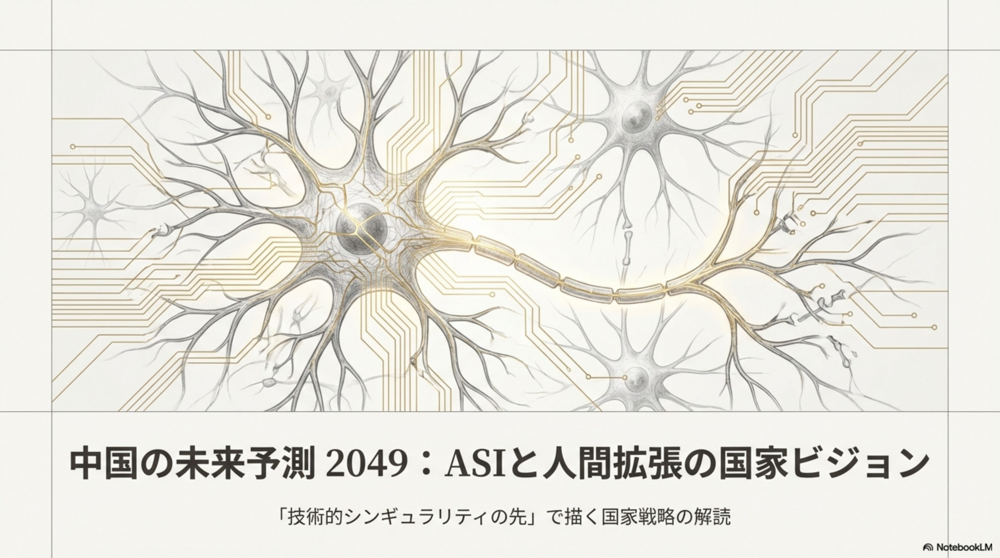
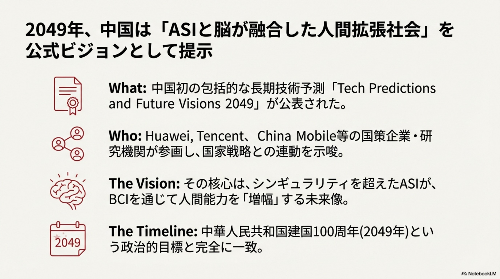
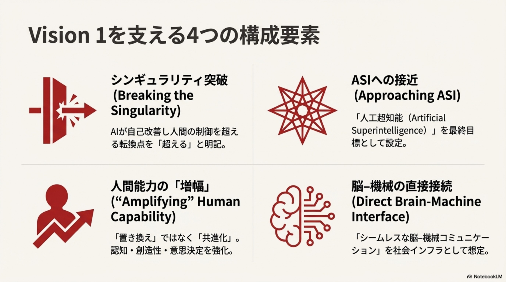
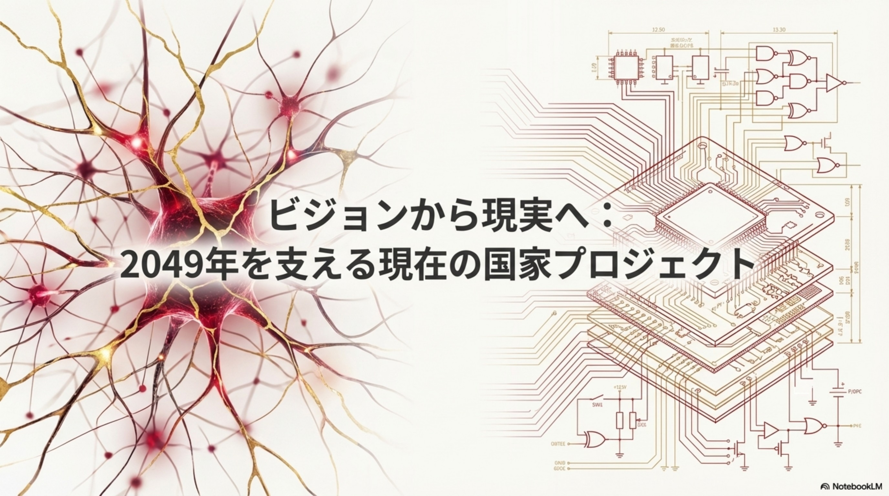
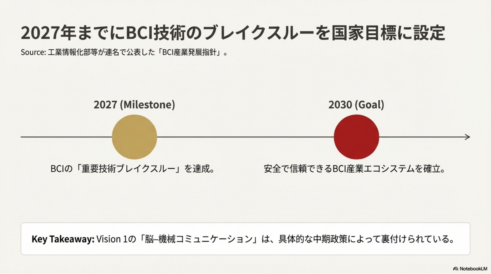
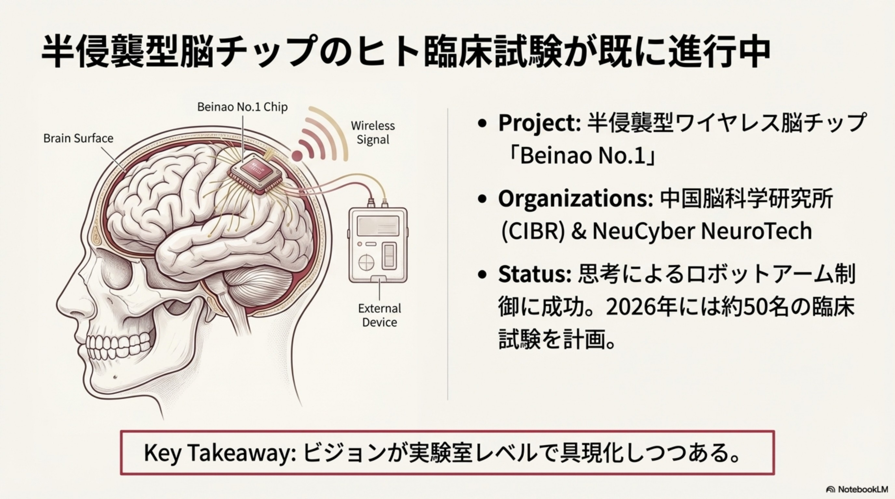
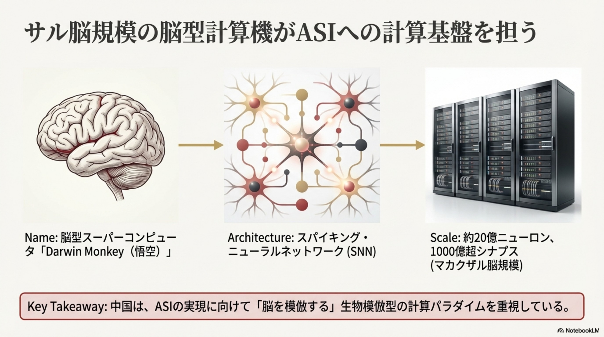
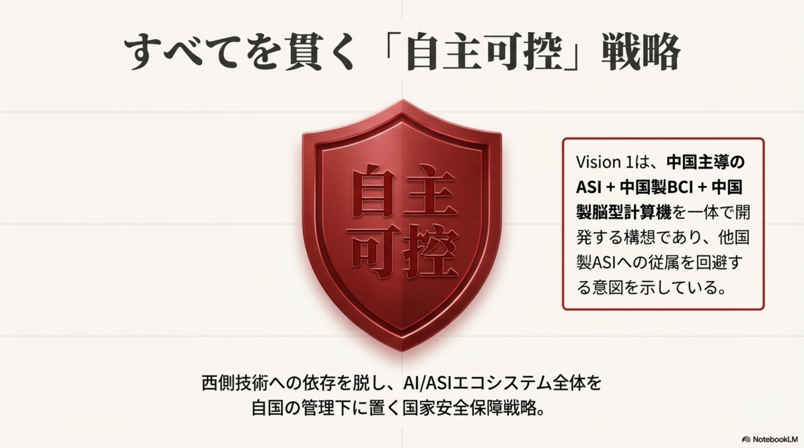
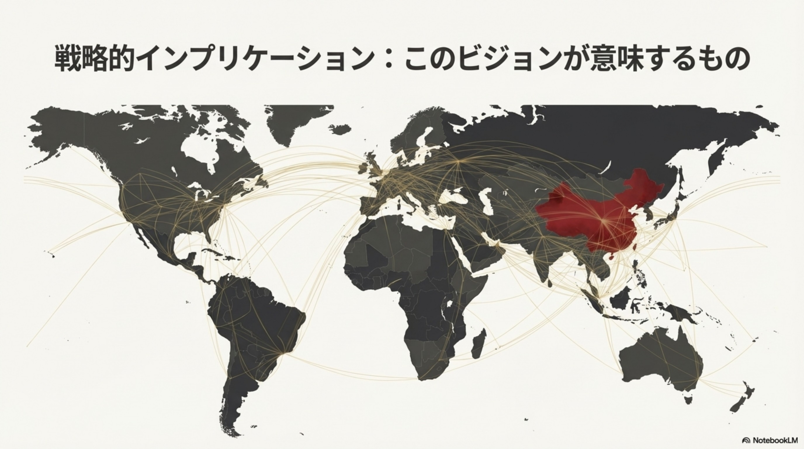
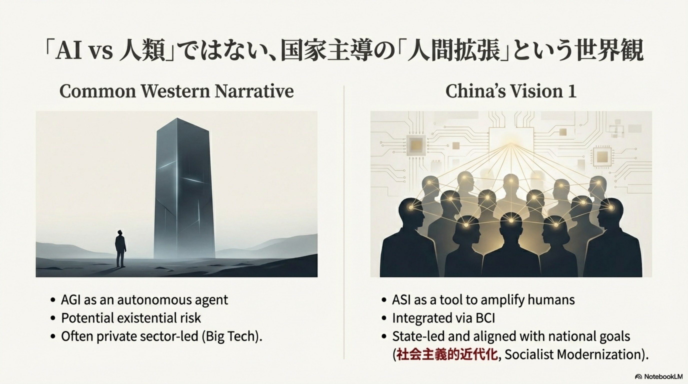
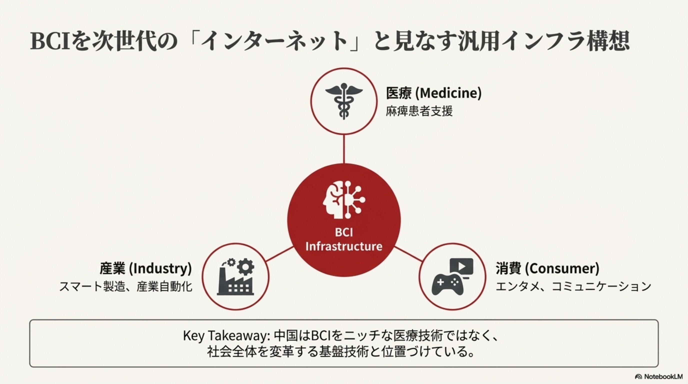
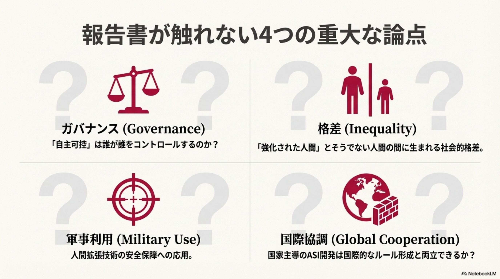
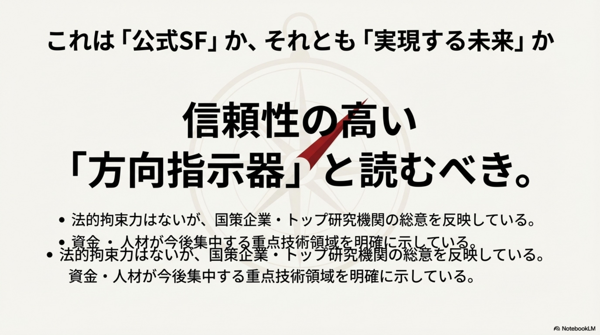
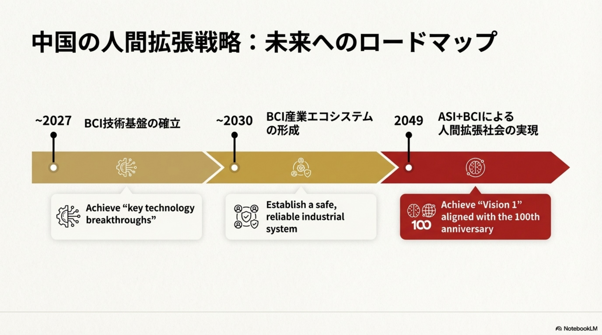
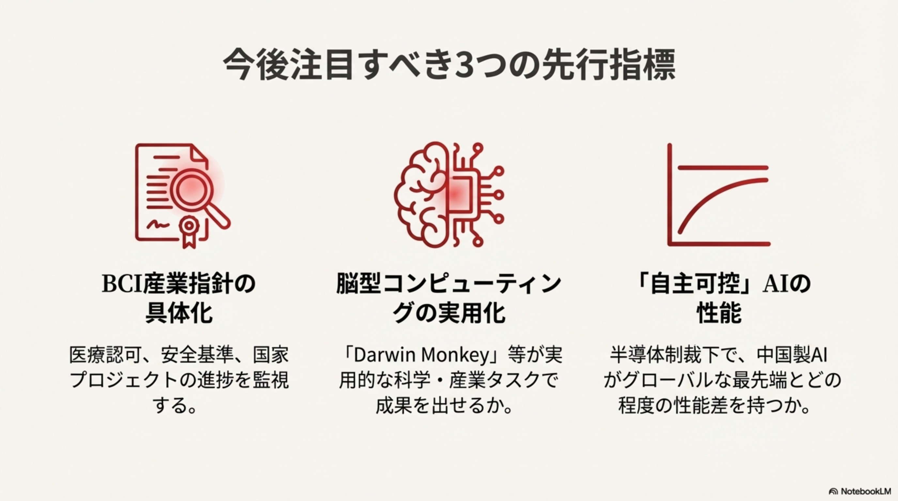

        </div>
        
        <style>
            .slide-img {
                width: 100%;
                max-width: 1000px;
                height: auto;
                border-radius: 12px;
                box-shadow: 0 4px 20px rgba(0,0,0,0.15);
                border: 1px solid var(--border);
                transition: transform 0.3s ease;
            }
            .slide-img:hover {
                transform: scale(1.01);
                box-shadow: 0 8px 30px rgba(0,0,0,0.2);
            }
            .slides-container {
                display: flex;
                flex-direction: column;
                align-items: center;
                gap: 24px;
                width: 100%;
            }
        </style>
      </section>
    </main>
    <footer>
      <p>&copy; 2025 AI News Archive | このスライドは教育目的で作成されています</p>
    </footer>
  </div>
</body>

</html>